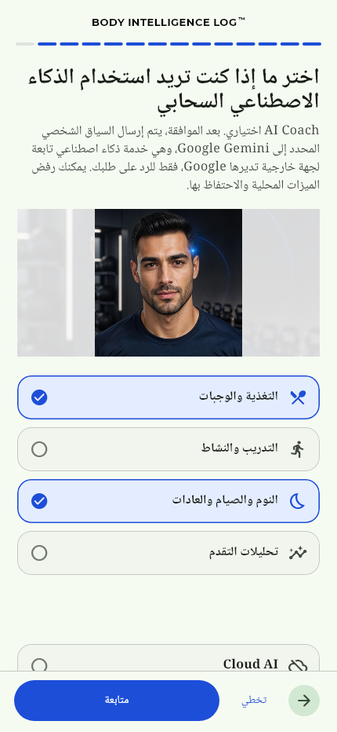
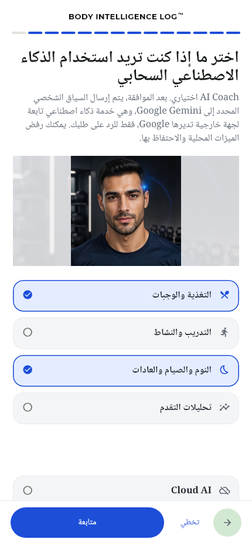
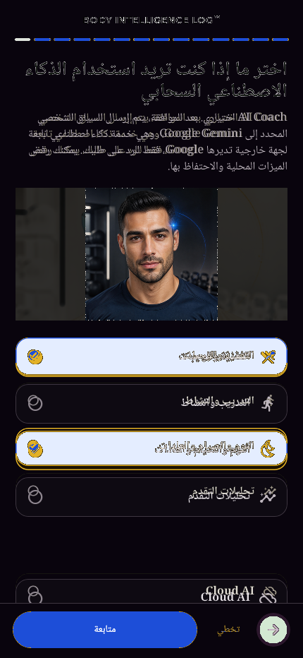
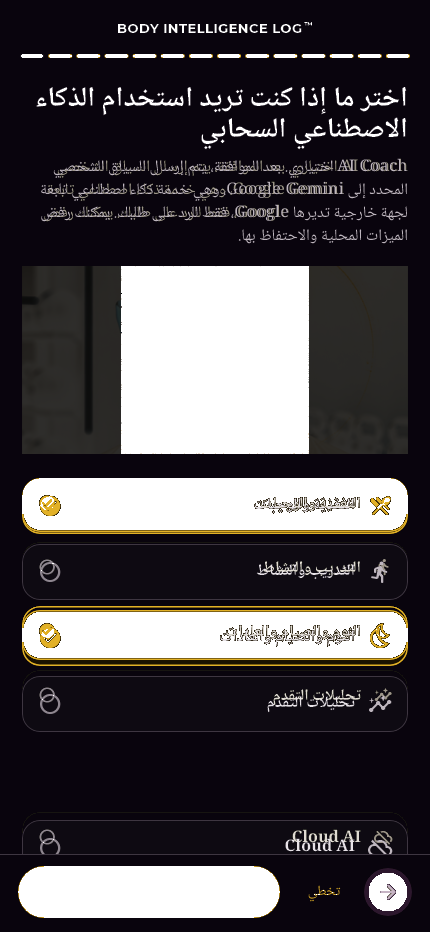

التصنيف المقترح: B. اختيارات AI العربية: الخلفية الخضراء الخفيفة أصبحت محايدة، وحواف الصفوف والأيقونات أخف؛ نفس الخيارات المختارة والصورة. نافذة الموافقة ليست داخل هذه اللقطة.
RobotoEvidence / BILArabic or NotoArabicEvidence; readable real glyphs
Baseline test/features/onboarding/goldens/onboarding_2026/ai_430x932_ar_light_100.png, commit c893df0ae37098bf574a298e88698ff52ecfdb8b
Source: lib/features/onboarding/onboarding_page.dart:586
HOLD RED; main QA approves this exact pair individually. A: replace invalid font evidence only after signoff; B: verify intended source history and approve or reclassify C.
Same pixels as previous failed actual: True. Master unchanged, no approval.



